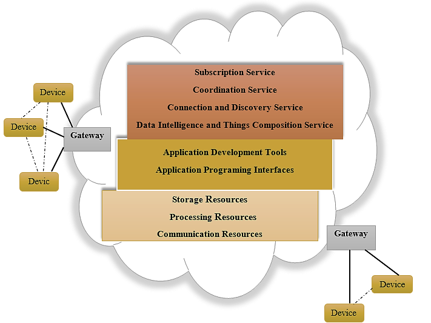
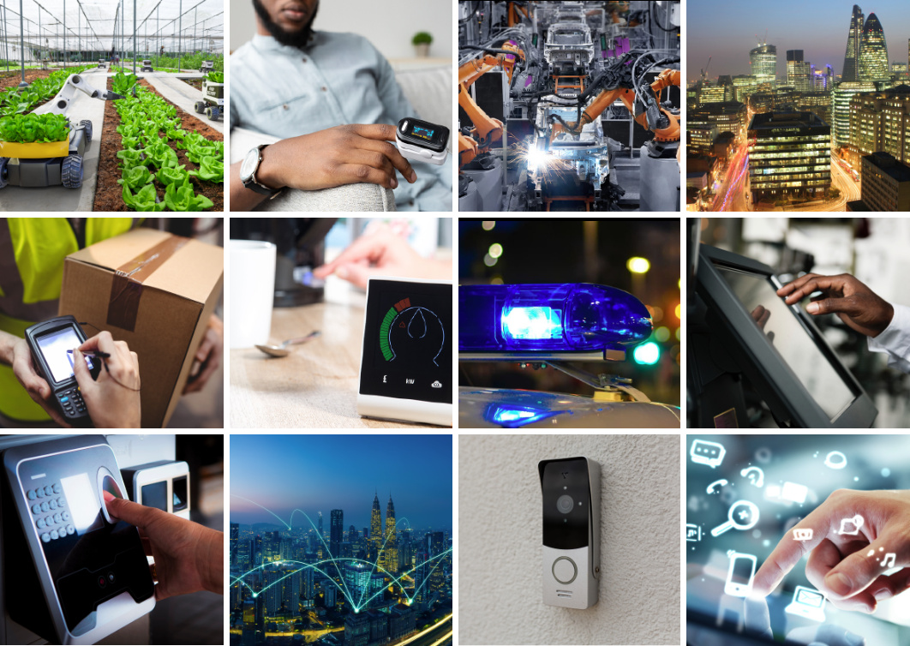

Módulo 1.1. ¿Qué es el Internet de las Cosas (IoT)?
Vivimos en un mundo donde los objetos cotidianos han dejado de ser elementos pasivos. Hoy, muchos de ellos están equipados con sensores, chips y conectividad, lo que les permite recolectar, enviar e incluso procesar información. Desde un reloj que mide nuestras pulsaciones hasta una nevera que sugiere qué productos comprar, el Internet de las Cosas (IoT, por sus siglas en inglés) está redefiniendo la forma en que interactuamos con nuestro entorno.
Piensa en tu rutina diaria. ¿Qué dispositivos conectados usas en tu vida diaria? ¿Cómo cambiarían tus rutinas si esos dispositivos no existieran?
Metodología
| Objetivo específico | Resultado de aprendizaje | Evidencias de aprendizaje | Actividades de aprendizaje |
|---|---|---|---|
| Identificar los conceptos clave del IoT y su impacto en la vida cotidiana e industria | Reconoce y describe qué es IoT, cómo funciona, y da ejemplos de aplicación en contextos domésticos e industriales |
|
|
Definición de IoT:
El Internet de las Cosas (IoT) se refiere a la interconexión digital de objetos físicos —denominados cosas— equipados con sensores, software y tecnologías de red, lo que les permite recolectar datos, transmitirlos y actuar en función de ellos. Estos dispositivos pueden ser desde un electrodoméstico hasta una máquina industrial o un sistema agrícola.
Características clave:
- Conectividad omnipresente
- Capacidad de procesamiento distribuido
- Recolección y análisis de datos en tiempo real
- Interacción hombre-máquina y máquina-máquina
Figura 1: Diagrama conceptual de un sistema IoT básico. Tomado de articulo
Un aspecto clave del IoT es la automatización, es decir, la capacidad de funcionar con intervención humana mínima. Por ejemplo, un sistema puede tomar datos de temperatura y activar automáticamente un ventilador si se supera un cierto umbral.
| Aspecto | Sistemas tradicionales | IoT |
|---|---|---|
| Recolección de datos | Manual | Automática |
| Comunicación | Local o aislada | En red, interoperable |
| Análisis | Retrospectivo | En tiempo real |
| Acción sobre el entorno | Manual | Automatizada (actuadores) |
| Ejemplo | Interruptor de luz | Sensor de luz + actuador |
Interoperabilidad en IoT:
La interoperabilidad es la capacidad que tienen los dispositivos IoT de comunicarse entre sí, sin importar el fabricante, la plataforma o el protocolo que utilicen. Esta capacidad es crítica en IoT porque en una red real conviven múltiples marcas y tecnologías.
Para lograrla, se utilizan estándares de comunicación como MQTT, HTTP o CoAP, que permiten compartir datos entre sensores, actuadores, aplicaciones móviles y plataformas en la nube.
Figura 2: Mapa de interoperabilidad. Tomado de articulo
Video 1:
Interoperability in IOT || FIOT || Internet of things || JNTUH
Ver desde 0:00 a 5:20
Reflexión: ¿Qué retos ves en que tus electrodomésticos, sensores y redes móviles puedan trabajar juntos?
Ejemplos de Aplicaciones IoT:
Las aplicaciones del IoT son amplias y abarcan sectores como:
- Domótica: termostatos, luces, cerraduras y cámaras conectadas a internet, controladas desde el celular.
- Salud: marcapasos, glucómetros o relojes inteligentes que transmiten datos vitales en tiempo real a profesionales de la salud.
- Industria: sensores que monitorean máquinas, detectan anomalías y previenen fallos (mantenimiento predictivo).
- Agricultura: sensores de humedad del suelo para activar riego automático.
- Ciudades inteligentes: semáforos que se adaptan al flujo vehicular, basureros inteligentes, redes de alumbrado eficientes.
3 aplicaciones reales de IoT:
- Smart Home (hogar inteligente): Control de luces y temperatura desde el celular.
- Monitor de salud portátil: Pulsera que mide el ritmo cardíaco y calidad del sueño.
- Fábricas inteligentes: Dispositivos que detectan fallos en motores antes de que ocurran.
Puedes leer más aplicaciones de IoT en link.
Figura 3: Collage de aplicaciones IoT por sector. Tomado de link
Cómo IoT transforma el día a día:
El impacto del IoT en la vida cotidiana es cada vez más evidente. Gracias a esta tecnología, tareas que antes eran manuales o dependían de la memoria del usuario, ahora son automáticas, inteligentes y eficientes.
Desde asistentes virtuales como Alexa, que controlan múltiples dispositivos mediante comandos de voz, hasta relojes que alertan sobre anomalías cardíacas o detectan caídas, el IoT mejora tanto la comodidad como la seguridad de las personas.
En las ciudades, el IoT está cambiando la forma en que se gestiona la infraestructura pública. Las ciudades inteligentes emplean sensores conectados para mejorar la eficiencia del tráfico, el alumbrado público y el suministro de agua. Los sistemas de transporte pueden ajustar los semáforos en tiempo real para aliviar la congestión, mientras que los contenedores de basura inteligentes notifican a las autoridades cuando necesitan ser vaciados, reduciendo costos operativos y mejorando la sostenibilidad.
Además, el IoT mejora la salud y el bienestar de las personas a través de dispositivos como relojes inteligentes y pulseras de actividad que monitorizan signos vitales, como la frecuencia cardíaca y el sueño. Estos dispositivos permiten a los usuarios tener un mayor control sobre su salud y compartir la información directamente con los médicos para una atención más precisa. En conjunto, el IoT está facilitando un estilo de vida más eficiente, conectado y saludable.
Reflexión: ¿Qué aspectos de tu rutina diaria podrían beneficiarse del uso de tecnología IoT? ¿Qué riesgos o incomodidades podría traer este nivel de conectividad?
Figura 4: Línea de tiempo visual que muestre cómo ha cambiado la vida cotidiana antes y después del IoT. Tomado de link
Conclusiones
El Internet de las Cosas es más que una tendencia tecnológica: es una transformación radical de cómo percibimos, controlamos e interactuamos con el mundo físico. Entender su definición, funcionamiento, interoperabilidad y casos de uso es el primer paso para construir soluciones propias con impacto en la vida real.
Reflexión final: ¿Qué oportunidades o riesgos identificas si todo a tu alrededor estuviera conectado?
Referencias
- Borgia, E. (2016). IoT: Research challenges and solutions
- Saarikko, T. et al. (2017). The IoT: Are you ready for what's coming?
- Xia, X. (2020). IoT Research and Application of IT